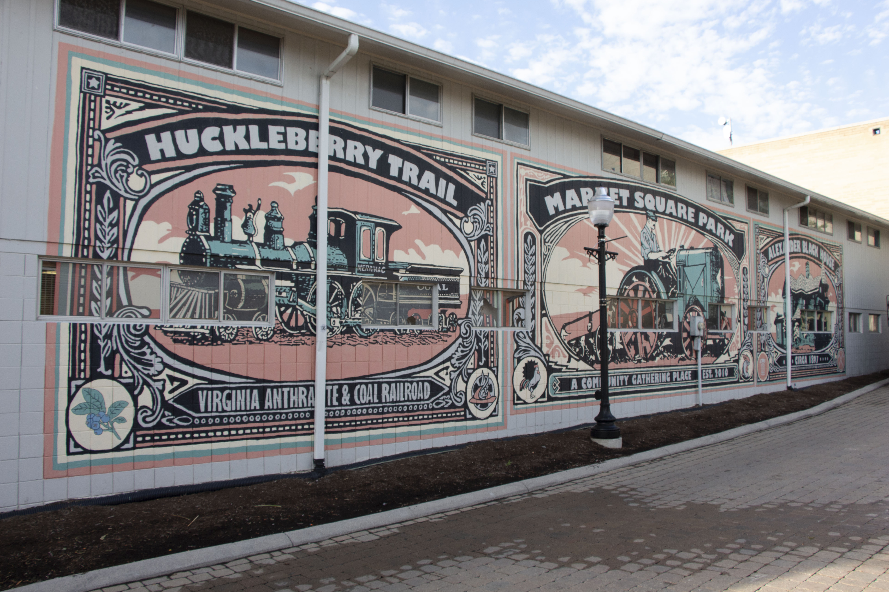
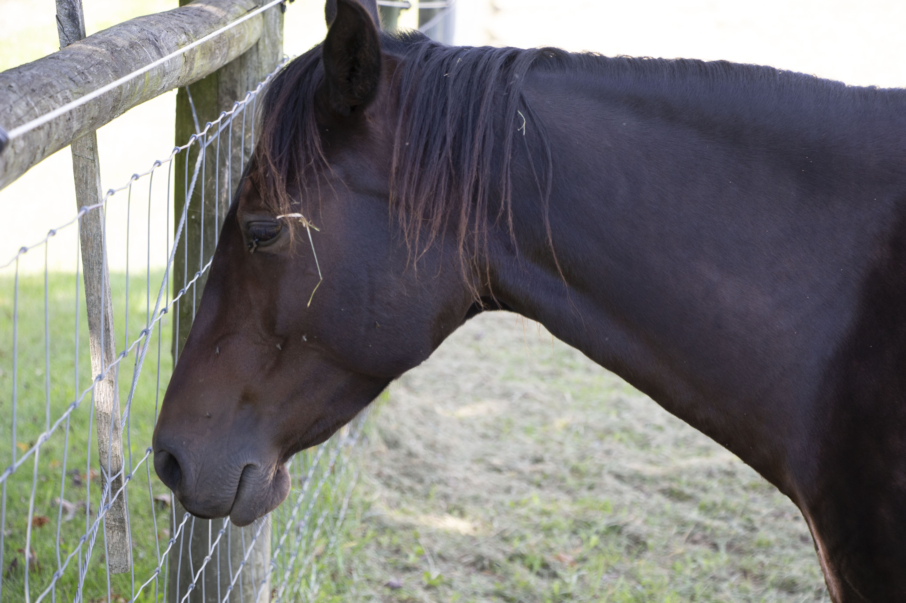
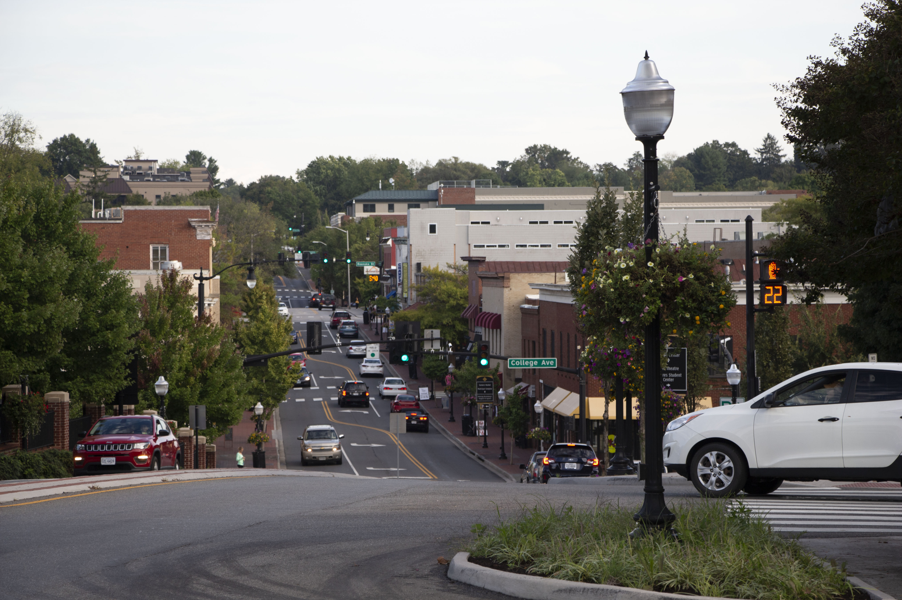
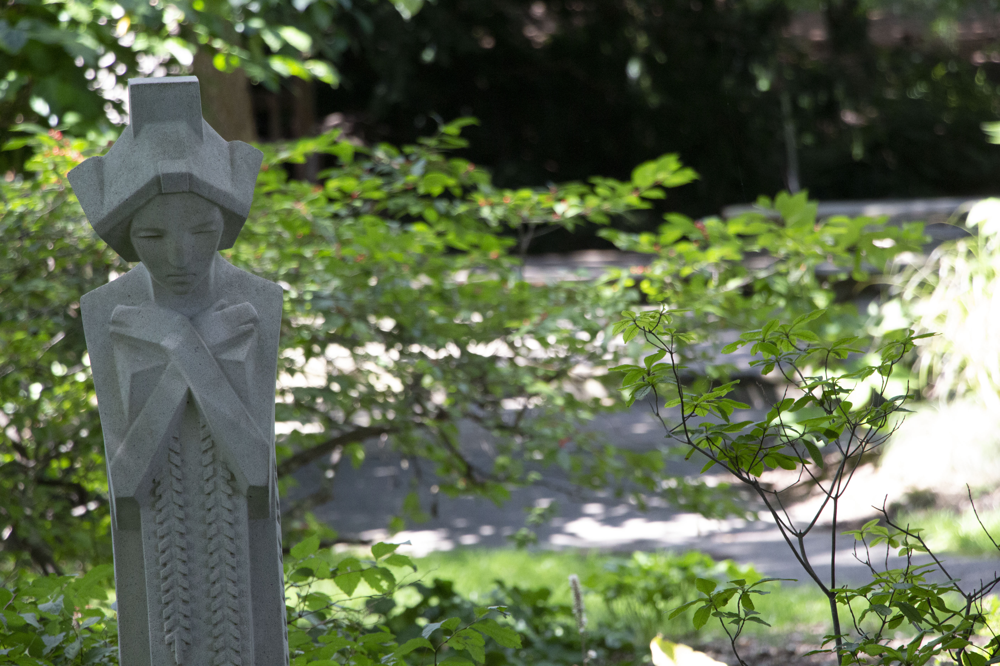
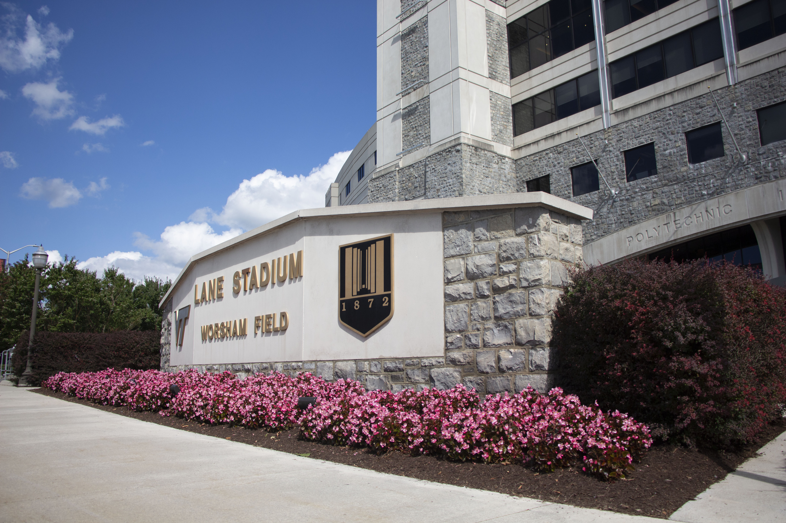
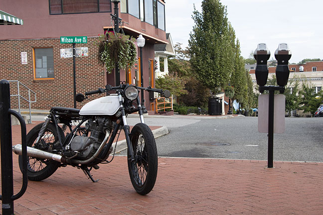
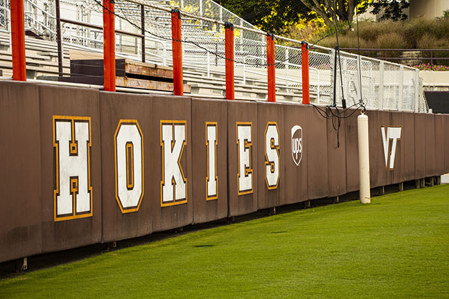
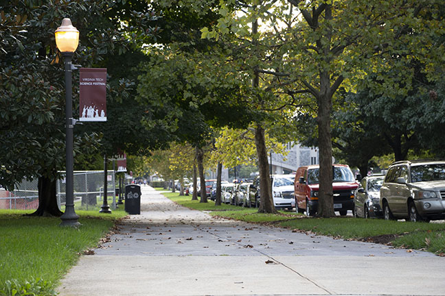
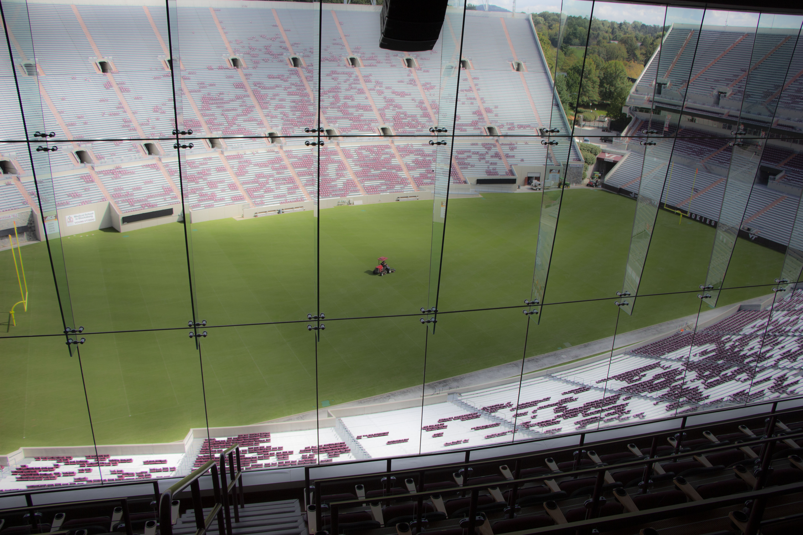

8th Hole at The Blacksburg Country Club
This is the most photographed hole on the course. Set in the New River Valley, the Blacksburg Country Club offers beautiful views of the Shenandoah Mountains. The "Red Barn" is a staple of the course
and is why the most prestigious tournament at the course is named, "The Battle for the Barn".

Blacksburg Farmer's Market
The Blacksburg Farmer's Market is located on the corner of Draper Street and Roanoke Street in downtown Blacksburg. Both students and locals come together in a fun setting to enjoy a local
breakfast or shop for some nick-nacks that were made right here in the NRV. The Farmer's Market is open on Wednesday's from 12-6PM and Saturday's from 9AM-2PM.

Horse at the Dairy Farm
This Horse posed for a photo in a pasture on the Virginia Tech dairy farm. No more information is known about the horse other than it is photogenic and loves to be around people.

Main Street
Main Street is the second most visited spot by tourists when they come to Blacksburg, with Lane Stadium being the first. There are a bunch of local shops and hole-in-the-wall restaurants that cook food that will
make you want to come back for more. Also, this is the main area of nightlife for older Virginia Tech students. The three most popular bars in town are, Big Al's, Sharkey's & Top of the Stairs, AKA TOTS.

Maid in the Mud
The "Maid in the Mud" Garden Sprite was orignally sculpted by Frank Lloyd Wright. This sculpture is located in the Hahn Horticulture Garden located on campus. This was gifted to the University
by Warren and Margie Kark in 2007.

Lane Stadium Marquee
Lane Stadium memorializes Edward Hudson Lane Sr., a student here in the early 1900's who later became a member of the board of visitors. He co-founded the Lane Company, the world's largest producer
of cedar chests; served on four major corporation boards; and sat on the national Business Council.

Hokie House Motorcycle
Hokie House is known for it's wings, darts & the motorcycle that sits out front. Every weekend Hokie House is hopping with undergrads as it hosts many themed parties or date functions for
sororities and fraternities.

North Endzone
The North endzone shakes more than another other part of Lane Stadium on Saturday's when Sandman comes on. This is where all of the students sit at home football games. The bleachers on this end
are metal causing it to be the nosiest part of the entire stadium.

The Moss
Virginia Tech's Moss Arts Center presents renowned artists from around the globe and from close to home, with a special focus on experiences that expand cultural awareness and deepen understanding.
This Moss also strives to create a thriving creative community fueled by inspiration, where patrons have meaningful experiences, enjoying arts of the highest caliber in a wide variety of forms.

Torgersen Bridge
Nunc blandit nisi ligula magna sodales lectus elementum non. Integer id venenatis velit.

University Mall
Nunc blandit nisi ligula magna sodales lectus elementum non. Integer id venenatis velit.

President's Box
Nunc blandit nisi ligula magna sodales lectus elementum non. Integer id venenatis velit.


{kind=link}
{kind=link}
{kind=link}
{kind=link}
{kind=link}
{kind=link}
{kind=link}
{kind=link}
{kind=link}